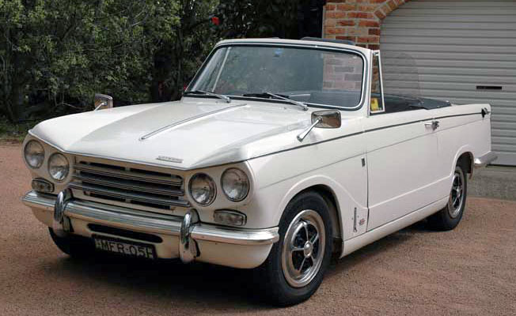

- 🏡Home🏡
- 👨🎓Schools👨🎓
- 💼Career💼
- 📈CV📉
- 🛩️Flying✈️
- ☎️Contact Me☎️
- 📜Various📜
My Working Life!💼
My Career & Work Experience

When I left Ellis Robins school, I started Working for Piero Diliberto in Jameson avenue. It was quite exciting in the beginning, as it was my first working experience, but after the second year, I hated the job, & I knew this wasn't what I wanted to do for the rest of my life. So after the 4 years was up, I left the company. That was the one & only job I had in Rhodesia.
When I arrived in Margate UK, I started work at 'Dreamland Amusement Park' on one of the stands as a bingo caller. That was good fun, calling in the tourists, & trying to get them to play. After that I worked for a Cypriot guy named Savas in Margate High Street. After work, in the evenings, I had a part time job at a pub called (Click--> "The Old Cottage Pub"). I absolutely loved working there, serving the customers & I made so many friends there & the bosses Mrs Watson & her son Bob always made sure I was looked after. I also learnt all aspects of running a pub, & they just gave me a free hand running it. I was doing all the ordering for the bar, not only the alcohol side of the pub business, but everything else that goes with it, I would also get involved with planning events, calculating the quantities required & make sure there was enough stock on hand to complete the event. The only downside to the job was when the pub closed after last orders & when everything was clean & tidy, I had to get a bus back to Garlinge, where I was living which meant by the time I got home it was 12:30 - 1:00am. Then of course I had to get up the next morning for my day job. So it was quite a long day.
I remember when I was working at the pub, Mrs Watson said she had a surprize for me. At the back of the pub was the pub's private car park for the punters. So she said for me to follow her, & we went into the car park & she pointed to a car & said "Thats for You" as a present for all the hard work I had done since I had been there. It was a convertable car "Another Chick Puller". Triumph Vitesse Convertable.
My Triumph Vitesse Well you can imagine how excited I was. I was over the moon & not having to rely on late night buses anymore & could also take Bill out.
One evening the other boss Bob arrived, & rushed into the pub shouting at me saying "What have you done?". I said what are you talking about! but all he kept saying was that I'm in deep trouble with the police & that I better find somewhere to hide, or better still leave the country. Well you can imagine by now my heart is racing & Bob said have you seen the news paper today & I said no, & on that note he pulled out a copy of the local newspaper & on the front page was a huge picture of me, with the headlines underneath... Have you seen this man? 'WANTED FOR RAPE'.
Can you imagine what that felt like. Seriously, panic set in....I started to shake felt sick & didn't know what to do. So I went and hid in the cellar behind the beer barrels. Anyway about 1/2 hour later I heard these voices coming down the cellar stairs & it was Bob with his mum laughing. Bob then said lets get back to the bar & I said NO! in case the police came in, & he said that will be highly unlikely.
He had set me up!. It was a prank!. So then he told me that his other job is an editor for the newspaper, & he had taken my photo one evening without me seeing & had it developed. From this, they made a false front page of the paper using that photo of me & added in the text. Now Bob was about 6ft 4in tall, & because I was still shaking & now fuming after what he put me through, I called him out to the car park, but as time went on I cooled down and saw the funny side.(Glad I didn't take a swipe at him 😂)
I was feeling a bit down when I told Mrs Watson that I was leaving for Southend, & she welled up a bit. Quite sad really. I tried to see if I could E-Mail either of them in later years, but sadly the pub closed down, as you can see in the link above.When I arrived in Southend, I applied for an engineering position at a company based in Rochford. The company was owned by a father & son who lived in Thorpe Bay near the Yacht club. I got the job & started a few days later. They manufactured "Dish Warmers" for restaurant tables, & I learnt everything there was to know about their products. It was great fun learning how to operate all the different types of machinery, from bending hugh sheets of metal, de-burring, linishing, drilling & assembling. There was also a small part of electrics which I liked.
I left the company a short time later, & it was in 1976 I saw this advert about a government training scheme in electronics. So I phoned them up & made an appointment to go & see them. They were based in Chelmsford & I found out all the requirements to get on the course. One of my big worries was the up coming Maths exam & that a pass mark of 27 out of 30 was required, to enable me to get on the course. Well I went and bought books on Maths & any other books that I thought would help me to pass. I spent days & days just doing basic stuff division, fractions decimals etc & then progressing onto the more advanced stuff, until the big day of the exam.
I was really nervous but I came out with a pass mark of 27. I was over the moon & a date was set to start the course. Electronics was what I had always wanted to do & enjoyed every minute while I was on the course. After the course, Chris & I flew back to Rhodesia (1976) for a few weeks. I continued at night school studying electronics.
When I first started work in the UK, I was always employed direct with a company & on a salary, & contributing to the PAYE system. I did this for a few years when I did manage to find work.
After that, I was freelancing, meaning I wasn't full time employed anymore with one company.
I remember the first day I went freelance. I was woking at a company testing power supplies for "Rank Zerox" duplicating machines, & another bloke who was doing the same job was freelance, & he told me the benefits of being self employed. So I phoned the agency this bloke was working for, quit my job as a permanent employee on the Friday, & came back to the same company on Monday (now on a freelance basis), with my pay almost doubling. Never looked back.
I formed a Limited company called "Junifer Electronics", & took on contracts through other companies, or went in direct. The good news about feelancing, was that the money was significantly higher than being permanently employed & I was able to claim tax relief against a multitude of things, like fuel, wear & tear on the car, rail travel, food, customer entertainment etc. All that has changed now, as you can hardly claim on things like I used to.
I was earning above the maximum yearly allowance, so I had to register for VAT. What this meant is, I had to be very careful that I was charging the customer the correct amount & sending the correct amount to the Inland Revenue. And also, I could claim back the VAT that I spent on purchasing goods for the project. Every month I had a visit from the VAT man & he would go through my returns, & if it was wrong I was in big trouble but luckily, they were always correct.
With being freelance meant I had the opportunity to travel. I had some brilliant contracts in many countries & great locations.
These are some of the Countries/Cities that I have worked in:-
UK (Virtually All Over)
Outer Hebrides (Scotland)
Edinburgh (Scotland)
Milan (Italy)
Rome (Italy)
Singapore (Asia)
India (S.E. Asia)
Malaysia (Asia)
China (Tianjin)
Hong Kong (Asia)
Muscat (Oman)
Salalah (Oman)
Doha (Qatar)
Cairo (Egypt)
Toyko (Japan)